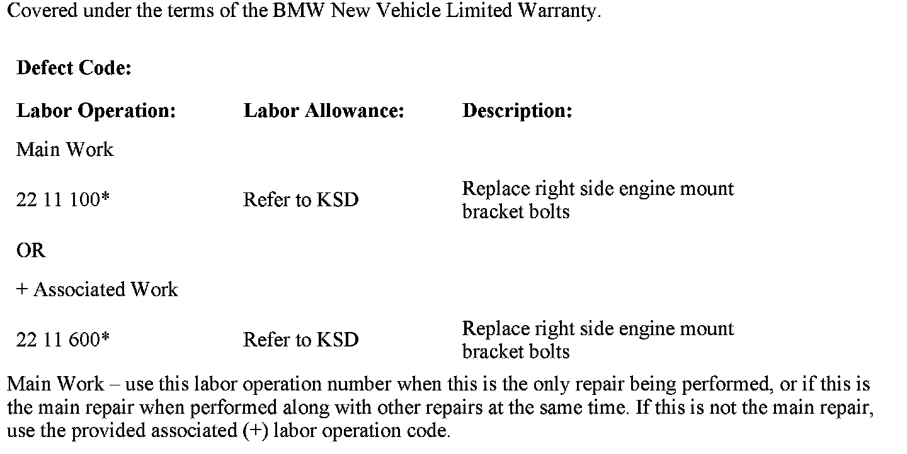

Engine - Vibration While Driving
SI B22 01 10Engine and Gearbox Suspension
September 2010
Technical Service
SUBJECT
Right Side Engine Mount Bracket Loose
MODEL
E90, E91, E92, E93 and E83 with N51 N52 and N52K engines
SITUATION
The customer may complain of an engine speed-dependent vibration felt in the vehicle during driving.
CAUSE
One or more of the engine mount bracket bolts on the right side engine mount have separated from the bracket.
CORRECTION
Inspect the right side engine mount bracket bolts. If one or more of the engine mount bracket bolts are missing, replace all four engine mount bracket bolts. Refer to Repair Instruction RA 22 11 100 for accessing the bracket and tightening torque.
PARTS INFORMATION

WARRANTY INFORMATION